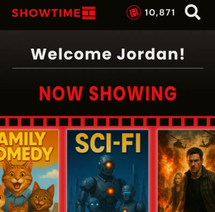

Showtime: Redefining Microinteractions for Moviegoers

Tools: Figma, After Effects, Jitter, Figmotion
Duration: 3
months
Roles: Interaction Designer, UI Animator
Overview
For my Interaction Design class, I reimagined the mobile app of a leading movie-ticketing service, focusing on how motion and feedback shape the user experience. I rebranded it as Showtime and redesigned the flow to emphasize its cinematic personality.
The Problem
The original app offered functional features — browsing, seat selection, payment — but lacked proper motion feedback and polish. Users had little sense of responsiveness or delight.
Research
I conducted a short competitive review of major cinema and streaming apps (AMC, Fandango, Netflix) to study how animation contributes to engagement and clarity.
Design Approach
Processes and Tools
All design and animation were created in Figma, with Figmotion and Jitter used for interactive previews. The loading animation was developed in After Effects.
Rethinking Motion
Every animation had intent — guiding attention, signaling success, or adding delight. I avoided purely decorative motion, instead designing feedback that made the experience feel alive while staying intuitive.
Key Microinteractions
- Home Page: “Now Showing” reel carousel with projector flicker
- Movie Page: Expanding trailer overlay and scrollable ticket reel
- Seat Selection: Group-size responsive map
- Checkout: “It’s Showtime” button triggers a popcorn celebration
- Ticket Display: Animated removal of scanned/refunded tickets
Video Demo
This video shows a user progression through my entire Figma prototype.
Check out the Figma file here!
Outcome
The redesign transforms a static experience into one that feels cohesive, intuitive, and playful. Each motion reinforces usability while reflecting the joy of going to the movies.
Reflection
This project showed how small design details define how users feel. Building Showtime strengthened my skills in interface animation, motion systems, and visual storytelling, while reinforcing that strong UX often lives in the smallest interactions.
This project is a conceptual redesign created for educational purposes only.